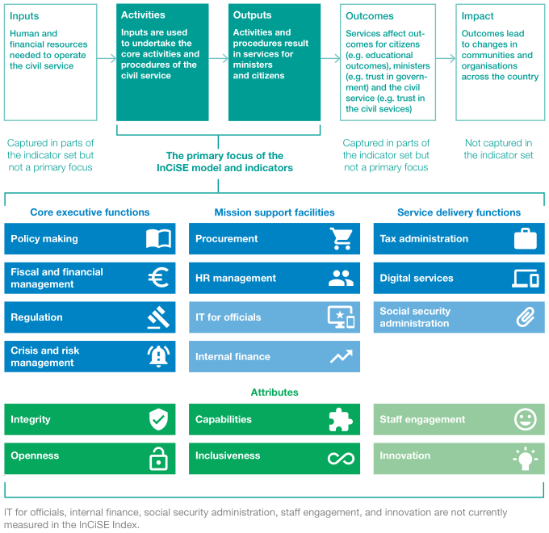
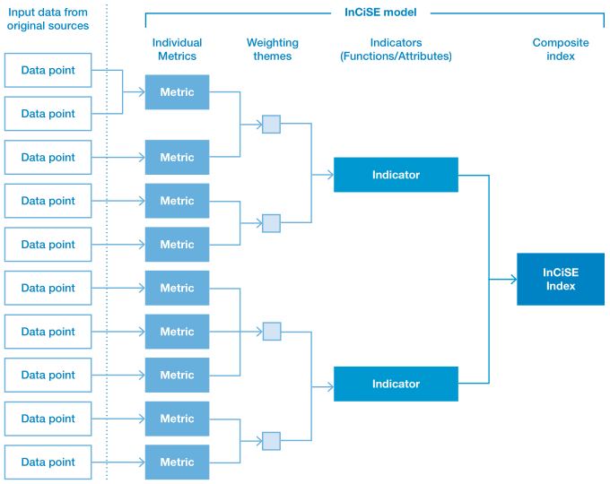

| Part/function of the public sector | Degree of inclusion in the InCiSE framework |
|---|---|
| Civil service functions that deliver services to citizens and organisations directly (e.g. tax and social security administration at the central/ federal level). | A primary focus of the InCiSE framework |
| Public administration functions of central government (e.g. fiscal management, policy making, regulation) | A primary focus of the InCiSE framework |
| 'Mission support' functions (e.g. HRM and procurement) that support the operation of central government organisations. | A primary focus of the InCiSE framework |
| Parts of the civil service which direct and support the wider public sector on specific policy areas (e.g. ministries of health or education) but may not deliver services to citizens directly. | Performance captured through the assessment of central government's public administration functions (e.g. policy making, regulation). Performance of policy areas themselves (e.g. quality of healthcare, educational attainment) are not assessed as these are not always the responsibility of central/federal government, moreover the policy goals and policy approaches taken are determined by political decision making. |
| Sub-national government/public administration (e.g. regional or local government) | While in some jurisdictions employees of sub-national governments may be classed as civil servants (e.g. via employment law) the scope of InCiSE is principally with the central/federal level of government in a country/state. However, general government/public administration (incorporating both central and sub-national government) may be used as a proxy where no central-level civil service data is available. |
| The wider public sector (e.g. schools, hospitals, police forces). | Out of scope. However, public sector data may be used as a proxy where no central-level civil service data is available. |
| Table 1.2.A in the original PDF publication | |
1 Introduction
This report sets out the methodology for the 2019 edition of the International Civil Service Effectiveness (InCiSE) Index project. It provides an explanation of the high-level principles underlying the development of the InCiSE Index, the overarching methodology for the Index’s calculation, the methodology for each of the constituent indicators that make up the Index, and documents the methodological changes made following the 2017 Pilot edition of the index.
1.1 Why InCiSE is needed
An effective civil service can play a vital role in determining a country’s progress and prosperity. But what constitutes an “effective civil service”? The functions of the central government are not always directly comparable to other organisations in a given country. Thus, international comparisons of government and civil service activity are often sought.
InCiSE aims to define “effectiveness” more extensively than previous literature, drawing on a wide range of existing international data sources to bring together a set of indicators, each measuring a different dimension of civil service effectiveness. These indicators are then used to produce a composite (overall) score. This creation of a new and concise set of civil service effectiveness indicators therefore serves as:
- An accountability tool: allowing citizens, government officials, and politicians to establish clearly and concisely how well their civil service is performing.
- A performance improvement tool: enabling senior decision makers to see the countries which perform best in each area, and therefore learn from them.
InCiSE has been developed following a literature review and in consultation with many experts, including academics from schools of government, think-tanks that monitor government effectiveness, international organisations, senior civil servants (past and present) and subject matter experts. InCiSE has also been the subject of an independent, international peer review process. The 2019 edition of InCiSE has also benefited from the feedback collected and provided since the publication of the 2017 Pilot.
1.2 Defining the civil service
Civil service effectiveness is well recognised in academic, international and practitioner communities as a highly complex area for analysis. As well as data limitations and the need to take account of country context factors, analysts are also faced with differing views on the definitions of both “civil service” and “effectiveness”. The scope, responsibilities, and structure of the civil service vary across countries, creating the need to establish exactly what is being assessed, and how. In defining the civil service there are a number of possible approaches to take:
- First, a civil service can be defined by function: a narrow view of the civil service through this definition focuses on the central, “upstream” agencies which set policy direction and procedural regulation for “downstream” agencies. The broader view encompasses agencies responsible for service delivery.
- Second, a civil service can be defined by national accounts: this perspective sees the civil service as made up of entities which are owned by the government, and whose financial reporting places them within the System of National Accounts (SNA) category of General Government.
- Third, a civil service can be defined by employment regimes: under this definition, civil service entities are limited to those which are required to hire most employees under the civil service law, and those using other legal employment regimes are excluded.
However, conceptual and practical problems arise under each of these definitions. For example, staff commonly referred to as “civil servants” do not always have legally distinct employee contracts; the SNA definition is inconsistent with the views of many practitioners and researchers; and each alternative conception results in a large and unwieldy group of agencies.
InCiSE therefore takes a fourth and alternative approach, defining the scope of ‘civil services’ by outlining and measuring performance on the core functions of civil services; the parts which can generally be classified as civil service in every country. This approach leads to a focus on (i) functions which deliver services or affect citizens directly and (ii) public management and policy functions carried out in the centre of government.
The unit of analysis of interest for the InCiSE Index is the civil service, rather than the public sector more generally. InCiSE also focuses on civil service at the central/federal level – the highest level of government in a country/state – rather than at the regional or local level. Even with these parameters, isolating civil service performance with currently available data is still difficult, particularly given the varying sizes and shapes of civil services internationally.
Table 1.1 gives more detail about what is included and excluded in the InCiSE Index.
1.3 The InCiSE framework
The purpose of the InCiSE framework is to define a common approach for assessing the effectiveness of a civil service, in a way which could realistically enable international data to be collected to measure against it. Whilst there are many alternative ways to define civil service effectiveness, the framework outlined here is informed by evidence and set out in such a way that if a civil service scores highly against it, it is reasonable to conclude that this civil service is high-performing relative to its international counterparts.
Our approach to deriving a common framework was to:
- Specify and adhere to a set of principles to inform the development of the framework:
- Coherent – identifying the key elements and drivers of effective public administration
- Comprehensive – covering all relevant aspects and drivers of the performance of public administration
- Actionable – offering genuine insights into what drives excellent public administration that can be implemented
- Transparent – a clear methodology and assessment process to ensure credibility, robustness, and replicability
- Feasible – it is possible to collect data for a large group of countries at reasonable cost
- Draw on evidence to identify key features of a draft framework which was then extensively tested through consultation.
- Build on existing indicators and data where possible, striving to develop a more comprehensive framework capturing all aspects of civil service effectiveness.
- Refine the framework through consultation with a number of experts, including academics, think-tanks, international organisations, civil servants (both past and present) and subject experts.
A common approach for assessing organisational effectiveness is to think in terms of inputs, outputs, and outcomes. However, this is appears less attractive when considering civil services and the public administration-type functions they provide. While output and outcome measures may have the advantage of cutting through conceptual uncertainty, they can be problematic in this area for three reasons:
- Outputs and outcomes can be affected by external factors, making it difficult to isolate the contribution of the civil service.
- Measuring outputs and their value can be methodologically problematic, particularly as many public sector outputs are provided free at the point of consumption.
- Focusing on outputs and outcomes means that normative and procedural concerns which are also relevant to effectiveness can be ignored.
Given these concerns, the preferred approach here is to focus on the effectiveness of the procedures within the civil service which (often indirectly) affect outcomes. The framework’s approach is therefore more process focused and output focused, as outlined in Figure 1.1. An advantage of choosing process-based indicators is that they are more instructive for potential performance improvements – it is processes that are ultimately changed to increase effectiveness.
Although procedural definitions also come with problems (they may not actually correlate with positive outcomes, for example) certain procedural measures remain at the core of any measure of effectiveness. Where there is evidence to support the relationship between procedures and positive outcomes, procedures may also be intrinsically beneficial. For example, meritocracy of recruitment procedures in the civil service are important because there is broad agreement that such procedures and outcomes are associated with an effective civil service. However, the extent to which recruitment processes reward merit is also important in the principle of fairness which is valued in itself.

The InCiSE framework, shown in Figure 1.1, defines the core characteristics of an effective civil service. To do this, it assesses effectiveness on the basis of two interrelated dimensions: 1) the delivery of its core functions and 2) an underlying set of attributes which are important drivers of effectiveness across all parts of the civil service. Collectively the functions and attributes are called ‘indicators’ within the InCiSE model. Section 1.6 describes in more detail how the framework is implemented as a statistical model.
Functions: On one side, civil services deliver a set of central executive functions for ministers. These may help to formulate policy for the country (the effects of which are borne by citizens). On the other side, the services interact more directly with citizens through the delivery of services such as tax administration. Finally, in the centre, supporting these core external functions, are mission support functions such as HR management or IT services for officials. By looking across all three types of function, the aim is to measure how well civil services deliver the core elements of their roles. The functions identified by the InCiSE model are:
- Policy making: The quality of the policy making process, including how policy is developed and coordinated across government and monitored during implementation.
- Fiscal and financial management: The quality of the budgeting process and the extent to which spending decisions are informed through economic appraisal and evaluation.
- Regulation: The extent and quality of regulatory impact assessments and the degree of stakeholder engagement involved in them.
- Crisis and risk management: The effectiveness with which the government engages the whole of society to better assess, prevent, respond to and recover from the effects of extreme events.
- Procurement: The extent to which the procurement process is efficient, competitive, fair, and pursues value for money.
- HR management: The meritocracy of recruitment and the extent to which civil servants are effectively attracted, managed and developed.
- IT for officials: The extent to which civil servants have the technology and digital tools to work efficiently.
- Internal finance: The extent to which civil service operations are supported by well-managed and efficient finance systems, particularly on the alignment of finance with the business strategy and the level of civil servant satisfaction with finance support.
- Tax administration: The efficiency and effectiveness of tax collection (at the central/federal level). Social security administration: The efficiency and effectiveness of social security administration (at the central/federal level).
- Digital services: The availability and usability of national-level digital public services.
Attributes: Every civil service also has an underlying set of attributes which are important drivers of how effectively they deliver core functions. These attributes should apply to all parts of the civil service and are not specific to particular parts or functions. The inclusion of attributes in the framework is based on both a normative and a positive judgement: civil services should aim to cultivate and demonstrate these attributes as they are commonly (but not necessarily universally) understood as aspects of best practice, and the included attributes should generally be determinants of performance across all functions.
- Integrity: The extent to which civil servants behave with integrity, make decisions impartially and fairly, and strive to serve both citizens and ministers.
- Openness: The regular practice and degree of consultation with citizens to help guide the decisions we make and extent of transparency in our decision-making.
- Capabilities: The extent to which the workforce has the right mix of skills.
- Inclusiveness: The extent to which the civil service is representative of the citizens it serves.
- Staff engagement: Staff levels of pride, attachment and motivation to work for their organisation.
- Innovation: The degree to which new ideas, policies, and ways of operating are able to freely develop.
The 2019 edition of InCiSE measures 12 of the 17 functions and attributes defined by the framework. Chapters 3-14 provides further detail of the definition and measurement of each of these indicators. Four of the five indicators (IT for officials, internal finance, staff engagement, and innovation) are not included because it has not been possible to identify suitable or sufficient data for cross-country measurement. One of the five indicators (social security administration) was measured in the 2017 Pilot but has been depreciated due to data quality concerns.
1.4 The InCiSE data model
The InCiSE Index is based on a framework that describes the various components of an effective civil service. The Index operationalises this framework by measuring a series of indicators that correspond to the different components of the InCiSE framework. The overall InCiSE Index results are a composite of the indicator scores. In turn the indicators are split into themes, which describe important sub-divisions of the indicator. Scores for these themes are not computed but the theme structure is part of the weighting used in the calculation of the indicator scores. The themes within an indicator are represented by individual metrics, which ideally measure tangible qualities of the civil service that can be acted upon or influenced by senior officials. Most of the InCiSE metrics are single data points published by the data source providers, however some metrics are calculated from multiple data points. Figure 1.2 outlines the “data model” used by InCiSE, showing how individual data points from the external data sources combine to form the metrics, indicators and composite index of InCiSE.
InCiSE is not intended to measure inputs (e.g. money/resources) or public policy outputs (e.g. unemployment benefits paid; taxes collected) or citizen outcomes (e.g. life expectancy, GDP per capita, citizen wellbeing), as these are typically determined by political decisions about the size of the state and what it is aiming to achieve. Rather, InCiSE is designed to assess the effectiveness of the way in which the civil service of a country uses the inputs it has been given to deliver the policy outputs/ outcomes that it has been set.
One of the main aims of the Index is to provide a mechanism for civil services to learn from each other: in particular to offer a data-driven approach to identify sources of good practice. To achieve this, InCiSE does not assess the absolute performance of different civil services. Instead, it converts the absolute performance captured in the individual metrics into relative assessments of performance of the countries included in the Index. This means that scoring poorly in InCiSE does not in itself indicate absolute poor performance, rather that when compared to other countries performance is lower. Similarly, scoring well in InCiSE does not in itself indicate absolute high performance, but that when compared to other countries performance is higher. The fact that there is no natural scale for civil service performance strengthens the case for measuring relative rather than absolute performance.

1.5 Eligibility of metrics
Metrics are eligible for inclusion in InCiSE if they meet the following criteria:
- The data must be published in a free to-access form in the public domain and online. That is, an independent person must be able to access the data from a publicly accessible and free-to-use website.
- The data must be actionable. That is, the data must measure some quality or component of the civil service that government officials and ministers can act on to improve performance. Where data for the civil service is not available, public sector proxies can be used, but these must still be data that represent something that can be acted on.
- The data must be quantifiable, and if not directly collected and published as numerical data there must be a way to convert the data into a clear and relevant numerical format.
1.6 Technical approach
The technical approach for the 2019 model has used the 2017 InCiSE pilot edition of the model as the reference point for its methodology however the data collection and statistical model was rebuilt from first principles to provide a “clean slate” for the 2019 modelling. That is the 2019 model did not start as a copy of the 2017 final model with data updated to reflect the latest values with new data inserted and code amended. Instead, the 2019 model has been developed from scratch using R (rather than the mix of Excel and Stata used for the 2017 Pilot). This approach has been taken to (i) minimise the potential of error and improve quality assurance processes, and (ii) improve the openness, reproducibility and extensibility of the InCiSE model. The approach adopted for the 2019 InCiSE model is based on the Reproducible Analytical Pipelines approach developed by data scientists at the UK Government Digital Service (Gregory & Upson, 2017). The technical approach to coding and data management/processing was also influenced by the “tidyverse” principles Wickham (2015). A full list of the software packages used to develop and implement the modelling are listed in the References section at the end of this report.
1.7 Quality considerations and limitations
As with any analytical endeavour, there are limitations to how far and in what ways the InCiSE Index can and can’t be used. Furthermore, given its early stage of development, the InCiSE Partners are clear that the index remains an experimental methodology that is subject to change and evolve in order to refine and improve the Index.
This section outlines some of the key considerations that should be taken into account when reviewing and using the InCiSE Index. Stating these limitations is not to downplay the value of the index as a tool for cross-country comparison, rather it is to help users understand the data they are using. Furthermore, InCiSE is not intended to be used in isolation but to enhance the range of evidence available about government effectiveness. Users should build a “rich picture” of the situation by triangulation across the results from InCiSE, the underlying results from InCiSE’s source metrics or other international comparisons, and domestic information for which there is no international comparisons.
There are a number of different aspects that should be taken into consideration in regards to the quality of data used in InCiSE:
- Recency and frequency of the data: InCiSE 2019 uses the most recently available data as at 30 November 2018. Some metrics in InCiSE are collected annually, others biennial or longer, or are ad-hoc in their repetition. As a result, some metrics may use data that does not accurately reflect the most recent situation.
- Depth of the data: Some metrics represent a single measure in a survey, some are aggregations of multiple measures by the InCiSE model, while some are composite indicators compiled by others parties that are based on a range of metrics.
- “Spill over”: Some measures that contribute to one of the InCiSE indicators may be relevant to other indicators, but wherever possible this has been avoided. No original piece of data used by the InCiSE model is used more than once in order to ensure that the overall figures are not overly-reliant on a particular data source.
- Public sector proxy: The purpose of the InCiSE Index is to measure the effectiveness of a country’s national and central civil service. However, some metrics measure the performance of the public sector at large – or at least a larger subset than the specific unit of analysis that InCiSE is interested in. In this case the public sector measures can only be considered proxies.
- Proxy measures of effectiveness: The true nature of the effectiveness of a country’s civil service is inherently unobservable, and cannot be comprehensively observed in an empirical study. The purpose of the InCiSE project is to provide a means to combine a range of proxy measures to provide insight into the effectiveness of civil services. The InCiSE framework enables this analysis by providing a way to conceptualise how a civil service operates. The model therefore uses measures about the functions and attributes of a civil service to produce an estimate of effectiveness.
1.8 Relationship with other indicators and data collections
In setting the civil service as our unit of interest, it is also important to distinguish the difference of InCiSE with other ‘governance’ indicators (particularly the World Bank’s Worldwide Governance Indicators and the Bertelsmann Foundation’s Sustainable Governance Indicators). Other governance indicators take a broad view of the topic of governance, including assessments of political decision making within governing parties, the quality of democracy, the ability to hold the government to account, and the freedoms of media and civil society. These are important factors in considering the governance of a country in general. InCiSE seeks to complement these ‘broad’ assessments of governance by providing a deeper investigation with a narrower focus on a key element of the operation of government – the civil service.
Besides ‘broad’ governance indicators there are also thematic indicators that focus on specific elements of governance; for example, the World Wide Web Foundation’s Open Data Barometer, the World Justice Project’s Rule of Law Index or the OECD’s regulation indicators. There are also indicators focused on other themes that cut across sectoral boundaries (for example Transparency International’s Global Corruption Barometer, or the World Economic Forum’s Doing Business Report) which contain a large amount of information about countries but where only a few measures directly relate to central government/civil service performance.
Finally, there are also a range of data collections made by international organisations and other institutions (notably the OECD, the European Commission, and the United Nations) about the functioning of government/the civil service but which do not produce single composite assessments.
The InCiSE framework and index has been designed and developed to re-use data from these indicators and data sources to produce a single coherent and comparable data model that allows a wide variety of parties interested in civil service reform to make a high-level assessment of how the civil services of different countries compare. The InCiSE Index should not be used in isolation, but in combination with reference to the source datasets as well as with domestic data from within a country about performance across the various indicators.
Further considerations about the specific data quality of the InCiSE data and results is provided in Chapters 3-14.
1.9 Structure of this report
This Technical Report on the InCiSE Index is intended to describe the methodology, data and limitations of the approach used. The results of the Index can be found in the accompanying 2019 Results Report. Including the introductory chapter, there are seven chapters in this report:
- Chapter 2: Methodology of the InCiSE Index outlines the data processing, calculation of the InCiSE indicators, and calculation of the InCiSE Index.
- Chapter 3: Methodology of the InCiSE indicators sets out the methodology for each of the 12 indicators that make up the 2019 index.
- Chapter 4: Summary of changes from the 2017 Pilot highlights the changes made within the methodology of each indicator, as well as in the overarching methodology of the index.
- Chapter 5: Sensitivity analysis describes some of the uncertainties associated with the modelling process and subjective choices, and the consequent impact on the Index results.
- Chapter 6: Future development sets out the next steps for future consideration and development of the index methodology.
There are also two annexes to the report that provide additional detail:
- Annex A: Composite metrics provides details of how the different composite metrics used in the InCiSE Index have been constructed.
- Annex B: Sensitivity analysis results provides detailed results of the different tests conducted as part of the sensitivity analysis.